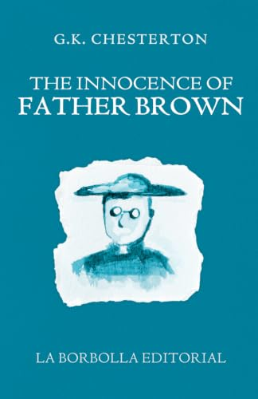
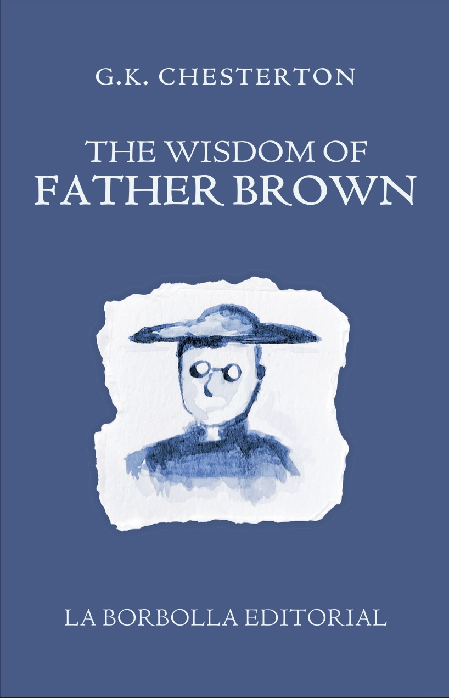
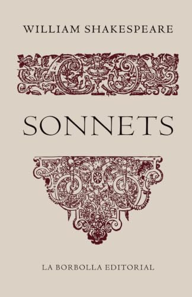

Classic fiction
The Innocence of Father Brown
Foreword by R. H. Naranjo
Twelve detective stories in which a small, unassuming priest solves crimes by understanding the people behind them.
Buy The Innocence of Father Brown on AmazonLa Borbolla Editorial
Books in print and in preparation.

Classic fiction
Foreword by R. H. Naranjo
Twelve detective stories in which a small, unassuming priest solves crimes by understanding the people behind them.
Buy The Innocence of Father Brown on Amazon
Classic fiction
With an essay by R. H. Naranjo
Twelve more cases for Father Brown, where the paradox is as sharp as the mystery.
Buy The Wisdom of Father Brown on Amazon
Poetry
Edited and typeset by La Borbolla Editorial
Shakespeare's sonnets in a plainly set edition made for slow, repeated reading.
Buy Sonnets on Amazon